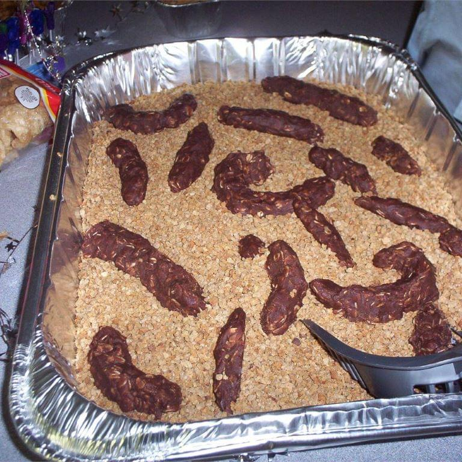

Cat Poop Cookies II

Description
These showstoppers are great at parties. For added effect, mix in coconut (tapeworms) ramen noodles (roundworms), or peanuts. You can also coat the scoop with melted chocolate for a startling effect.
Ingredients
- ¼ cup honey
- ¼ cup molasses
- ⅔ cup butter
- 1 egg
- 2 ⅓ cups whole wheat flour
- ½ teaspoon ground cinnamon
- ½ teaspoon ground ginger
- ½ teaspoon ground cloves
- 1 (32 ounce) package wheat and barley nugget cereal (e.g. Grape-Nuts™)
- ½ cup crushed ramen noodles
Steps
- In a medium bowl, Microwave the honey until it bubbles. This may take up to 1 minute. Stir in the molasses, butter and egg. Beat until smooth. Stir in the flour, cinnamon, ginger, and cloves until combined. Then add the dramatic additions of your choice such as coconut, ramen, chocolate chips, or peanuts. Chill dough until firm.
- Preheat oven to 350 degrees Fº (175 degrees Cº). Roll dough into logs about 3/4 inch in diameter. Cut into pieces the approximate length of cat poop. Roll pieces in the cereal, place on an unprepared cookie sheet, and bake for 10 to 15 minutes in the preheated oven.
- Serve the cookies in a disposable cat litter box, on a bed of cereal, with a brand new litterbox scoop. Add plastic flies, and dip the litter scoop in chocolate for added fun.
Source:https://www.allrecipes.com/recipe/15195/cat-poop-cookies-ii/